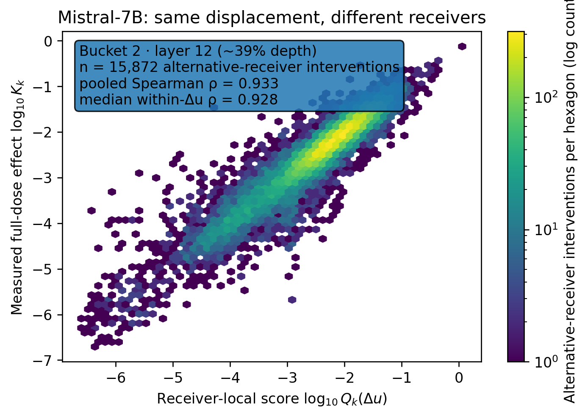
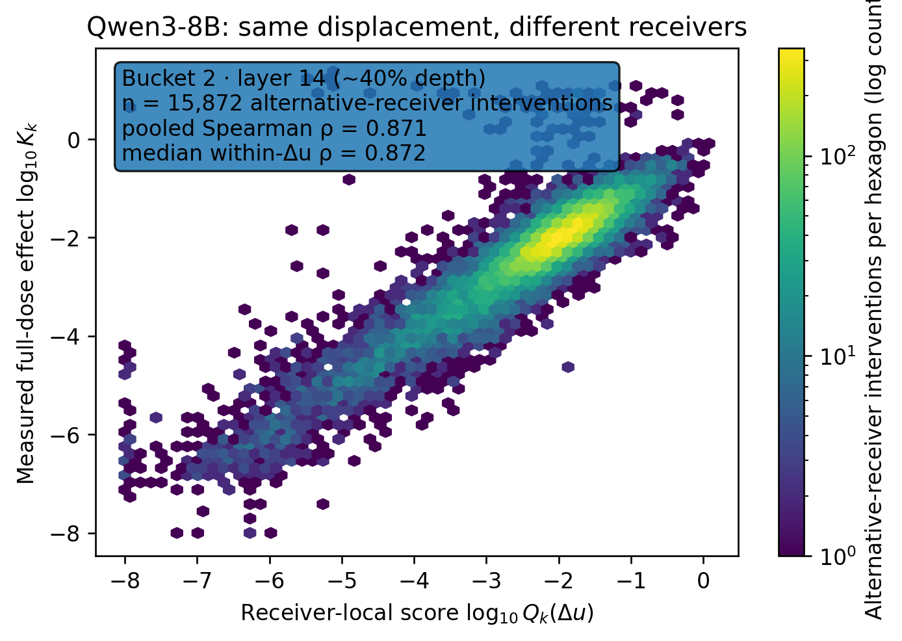
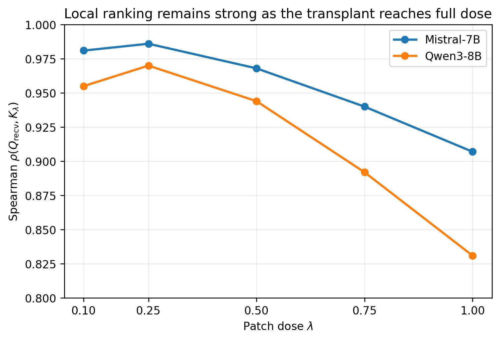

Accepted version. Camera-ready experiments and additional baselines forthcoming.
A simple controlled experiment for asking whether a transplant has a receiver-independent effect.
Take one natural MLP update difference Δu and keep its direction and magnitude unchanged.
Apply that exact same displacement to many different hidden states in the model.
Compare the exact output KL with a local sensitivity score computed at each receiver.
Activation patching often moves an internal activation from one context to another. We ask a basic question: if we apply the same transformer MLP displacement in two receiving states, does it have the same effect? We measure effect by the change in the model's next-token distribution and predict it with a local sensitivity score computed at the receiver.
In a direct crossed-receiver experiment on Qwen3-8B and Mistral-7B, the same fixed natural displacement produces strongly different effects across receivers; the receiver-side score ranks these effects with median within-displacement Spearman correlation 0.858–0.928 across six model-by-data replications. Some receivers are generically fragile, but after removing fixed-displacement and receiver effects the correlation remains 0.504–0.675, above a matched local-magnitude baseline at 0.284–0.442.
The destination is therefore part of the intervention: the perturbation alone does not determine its effect; the receiving state matters.
The experiment separates what is being moved from where it is received.
A host context produces an MLP update ui and a donor context produces uj. Their natural transplant displacement is Δu = uj − ui.
We freeze one displacement and add that exact vector to many alternative receiver states. Direction and magnitude stay fixed; only the physical receiving state changes.
At each receiver, we compute a local downstream sensitivity score using the softmax-Fisher quadratic form pulled back through the remaining network.
We then ask whether that local receiver score still ranks the measured effect of the full natural transplant at dose λ = 1.
The same displacement changes substantially across receivers, and local receiver geometry predicts the ordering.


At the primary depth, median within-displacement Spearman correlation is 0.911 / 0.928 / 0.928 across the three Mistral-7B buckets and 0.871 / 0.872 / 0.858 across the three Qwen3-8B buckets. The matched local-magnitude baseline is substantially lower.
Some receiver states are globally more sensitive than others. After removing additive displacement and receiver effects, a substantial pair-specific association remains in every primary replication.
| Model | Bucket | Fisher residual ρ | Matched baseline ρ |
|---|---|---|---|
| Mistral-7B | B1 | 0.664 | 0.411 |
| Mistral-7B | B2 | 0.675 | 0.442 |
| Mistral-7B | B3 | 0.658 | 0.414 |
| Qwen3-8B | B1 | 0.504 | 0.284 |
| Qwen3-8B | B2 | 0.504 | 0.292 |
| Qwen3-8B | B3 | 0.520 | 0.317 |

Across patch doses λ = 0.10, 0.25, 0.50, 0.75, and 1.00, correlation with exact KL remains high as the intervention grows from local to full dose. At λ = 1, the reported correlation is 0.831 in Qwen3-8B and 0.907 in Mistral-7B.